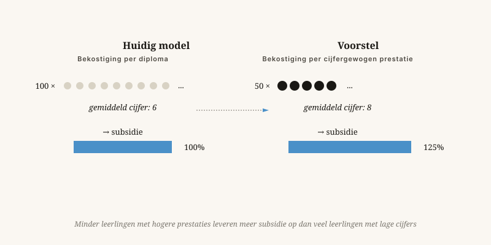

Van leerfabriek naar leerwerkplaats
Een school die honderd zessen aflevert, ontvangt nu meer geld dan een school die vijftig achten aflevert. Dat is het probleem.
Door Jacobus van Merksteijn · 9 min lezen · 23 mei 2026

De leerwerkplaats — waar talent en motivatie samenkomen
We financieren het aantal, niet de kwaliteit
We financieren scholen op het aantal diploma's dat ze afleveren. Dus leveren ze diploma's af — niet noodzakelijk geleerde mensen. Dat is geen wreedheid van de leraren. Het is een ingebouwde prikkel die zich vanzelf vertaalt in lagere normen, makkelijkere examens en steeds meer "leertrajecten" voor wie eigenlijk niet geschikt is voor het niveau.
Het probleem in één zin
Wie scholen afrekent op aantal slagenden, krijgt aantal slagenden. Wie ze afrekent op geleerde mensen, krijgt geleerde mensen.

Vier concrete hervormingen
Waarom dit met de 7D-denkwijze klopt
Schaalwet in de klas
Onderwijs schaalt slecht. Wat in een klas van vijftien werkt, faalt in een klas van dertig. Dat is geen bestuurlijk probleem — dat is een natuurwet. Een leraar kan een beperkt aantal mensen tegelijk aandacht geven.
Waarde die pas later zichtbaar is
Een goede leraar verandert een leven, en die verandering komt pas decennia later tot uitdrukking in welvaart of welzijn. Beleid dat alleen op kortetermijngeld stuurt, ziet die W-waarde niet.
Vrijheid als motor
Onderwijs vraagt om veelvoud: verschillende scholen, verschillende methodes, geen monocultuur. Eén ministerieel curriculum voor 7.500 basisscholen is een afvlakkingsmachine.
Is dit elitair?
Mensen zullen zeggen: u sluit kinderen uit. Mijn antwoord is dat een eerlijke spiegel het tegenovergestelde van uitsluiting is.
Wie nu een diploma haalt waar weinig achter zit, wordt later alsnog uitgesloten — op de arbeidsmarkt, in een opleiding waar hij niet aankan, in een leven dat hem niet past. Dat is wreder dan op tijd zeggen: dit is niet uw weg, kijk hier eens.
Onderwijs is geen socialezekerheidsstelsel. Het is een instrument om mensen zichzelf te laten worden. Dat lukt alleen met eerlijke maten.
Van leerfabriek naar leerwerkplaats
Een school die honderd zessen aflevert, ontvangt meer geld dan een school die vijftig achten aflevert. Dat is het probleem.
We financieren scholen op het aantal diploma's dat ze afleveren. Dus leveren ze diploma's af — niet noodzakelijk geleerde mensen. Dat is geen wreedheid van de leraren. Het is een ingebouwde prikkel die zich vanzelf vertaalt in lagere normen en steeds meer „leertrajecten" voor wie eigenlijk niet geschikt is voor het niveau.
Vier concrete hervormingen: bekostiging op het gemiddeld eindexamencijfer in plaats van het slagingspercentage; strengere toelating zodat motivatie en talent bij elkaar komen; stop met overheidsgeld voor kinderopvang in de eerste zeven à tien jaar en verleg dat budget naar ouderondersteuning thuis; en erken dat een uitstekende loodgieter meer maatschappelijke waarde levert dan een middelmatige bestuurskundige.
Is dit elitair? Een eerlijke spiegel is het tegenovergestelde van uitsluiting. Wie nu een diploma haalt waar weinig achter zit, wordt later alsnog uitgesloten — op de arbeidsmarkt, in een opleiding die hij niet aankan. Dat is wreder dan op tijd zeggen: dit is niet uw weg, kijk hier eens.
De schaalwet in de klas
Onderwijs schaalt slecht. Wat in een klas van vijftien werkt, faalt in een klas van dertig — dat is geen bestuurlijk probleem maar een natuurwet. Vrijheid voor scholen om anders te zijn is geen luxe maar de enige garantie dat er iets nieuws kan groeien. Eén ministerieel curriculum voor 7.500 basisscholen is een afvlakkingsmachine.